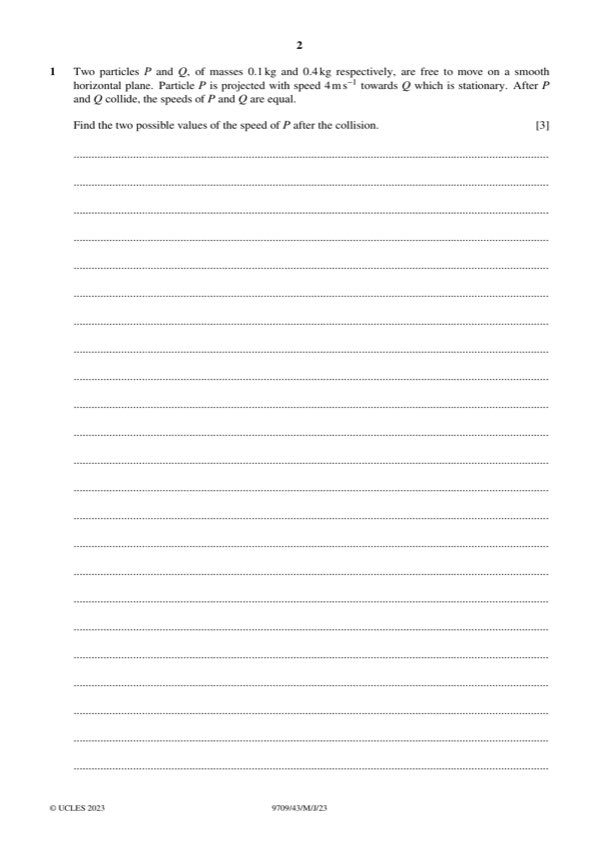

Question 1

Original paper page 2
Part 1 — solution
- [M1] 0.1 4 0 0.4v 0.1v
Mark points
- [M1] 0.1 4 0 0.4v 0.1v
Part 1 — solution
2 1
v kt 2 c Allow unsimplified e.g. v kt c .
Mark points
- Include the ideas shown in the solution above.
Part 1 — solution
Answer: 1
1
or 5 their 2 25 their 2 their10 their 2 represent all 3 phases of motion.
Mark points
- Correct result: 1
Part 1 — solution
- [A1] OE. Must be correct
Mark points
- [A1] OE. Must be correct
Part 1 — solution
- F 2 25 g 2 0.28 25 4 2 [⇒ F = 270]
Mark points
- F 2 25 g 2 0.28 25 4 2 [⇒ F = 270]